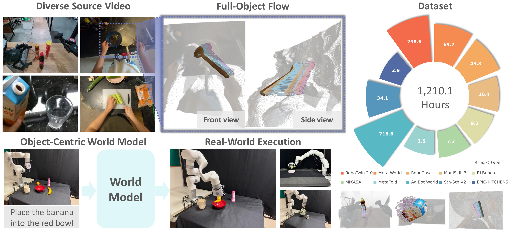
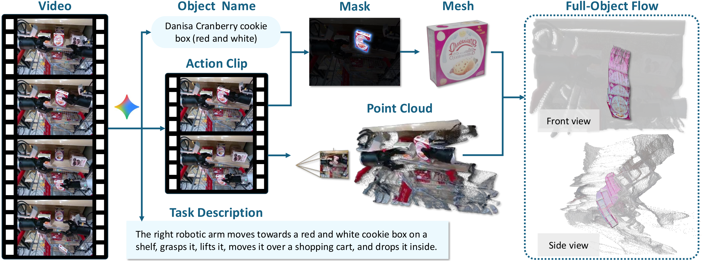
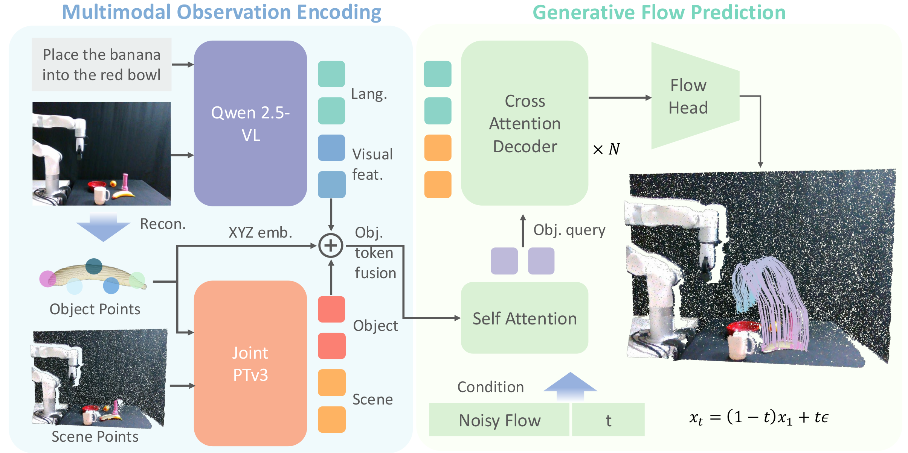
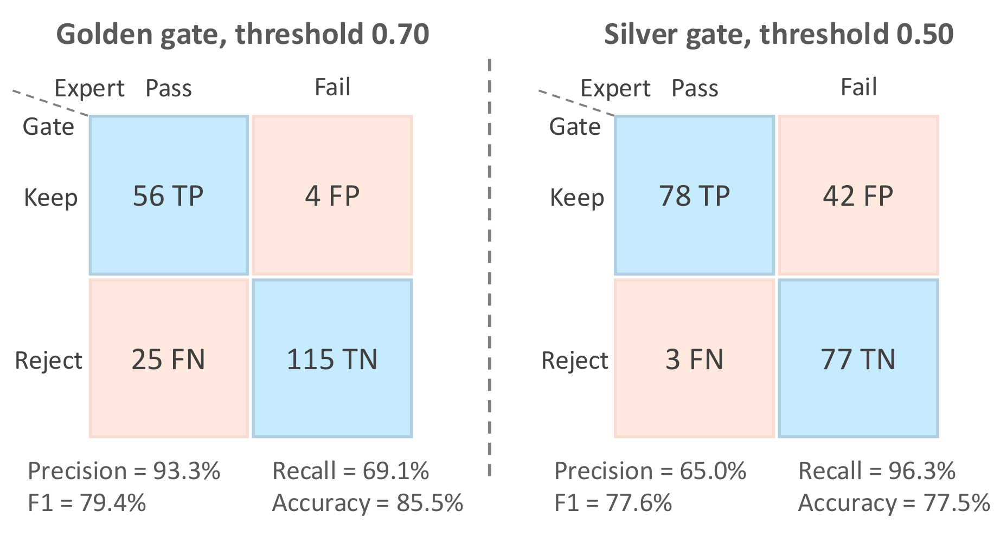
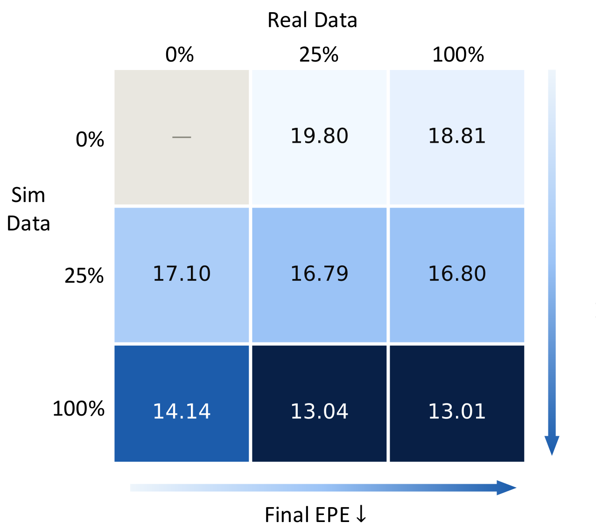

Supplementary video
Video overview
The idea
A complete motion interface between perception and action
ObjectWorld predicts dense trajectories over an object's complete surface, including regions hidden in the input view. The representation captures both rigid motion and non-rigid deformation while remaining independent of a particular robot embodiment.

Interactive dataset
Rotate the world. Follow the flow.
Explore 28 curated examples: 12 captured from real-world videos and 16 generated in simulation. Drag to rotate 360°, scroll to zoom, and scrub through time.
Loading scene index…
drag · rotate scroll · zoom
t000 / 00
RGB scene full-object surface pink → blue flow history camera pose
Data at scale
One pipeline, heterogeneous motion
The automatic annotation pipeline turns in-the-wild manipulation videos into complete 3D object trajectories without requiring robot actions, calibrated cameras, depth measurements, or pre-scanned object meshes.


Object-centric prediction
See the task. Reconstruct the object. Predict its future.
The model combines task-conditioned visual-language features with a joint 3D encoding of object and scene geometry. It generates 48 future frames for 512 sampled object points in a single dense trajectory.
512surface points
48future frames
3Ddense trajectories
Key results
Better flow, stronger execution
ObjectWorld improves dense flow prediction and transfers the resulting motion target across scenes, environments, and robot embodiments.
versus 10.24 cm for the strongest reported baseline.
successful trials across in-domain and held-out environments.
successful trials, compared with 10/15 for the flow baseline.
for the high-quality automatic filtering gate.


Execution visualization
From predicted flow to robot motion
Compare the predicted 3D full-object flow with the synchronized rollout. Examples span real-robot executions, LIBERO, and ManiSkill.
Loading execution index…
drag · rotate scroll · zoom
t000 / 00
RGB scene object surface pink → blue flow history camera poseFlow completes at 48 / 60